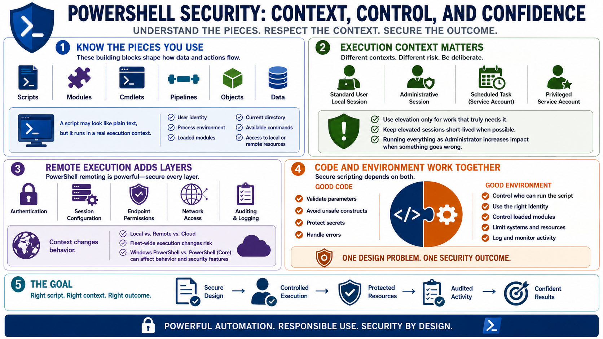

PowerShell Security Basics
Connecting to LMS... Progress: in progress

Narration
PowerShell security starts with understanding the pieces you are using. Scripts, modules, cmdlets, functions, pipelines, and objects all shape how data and actions move through automation. A script may look like plain text, but it runs in a real execution context with user identity, process environment, loaded modules, current directory, available commands, and access to local or remote resources.
The execution context matters as much as the code. A local script run in a standard user session has a different risk profile from a remote administrative session or a scheduled task running under a privileged service account. Administrative sessions should be deliberate, short-lived when possible, and scoped to the work that truly needs elevation. Running every script as an administrator is convenient, but it increases impact when the script is wrong.
Remote execution adds another layer. PowerShell remoting can be valuable for controlled administration, but it also depends on authentication, session configuration, endpoint permissions, network access, and auditing. A script that is safe for one local workstation may behave differently when pushed across a fleet or run against cloud services with broad roles. Version differences between Windows PowerShell and modern PowerShell can also affect behavior and available security features.
Secure scripting depends on both code and environment. Good code validates parameters, avoids unsafe constructs, protects secrets, and handles errors. A good environment controls who can run the script, what identity it uses, which modules it loads, what systems it can reach, and how activity is logged. Treat those as one design problem, not separate concerns.